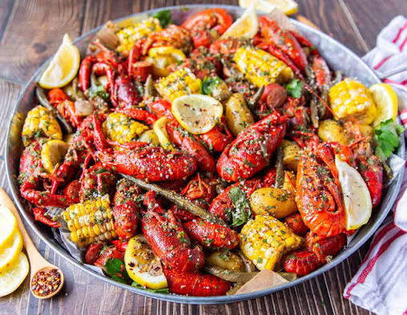
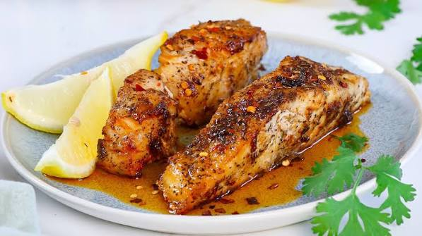
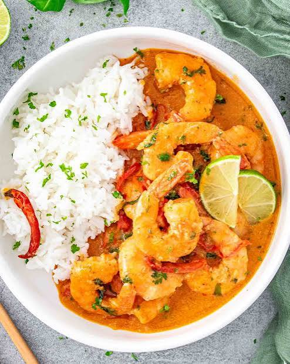
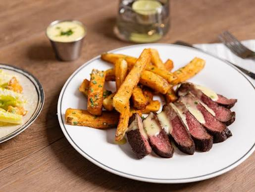
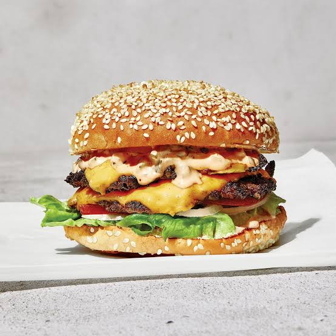
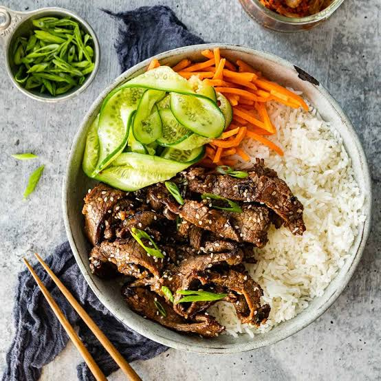
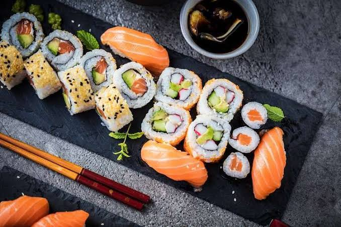

Restaurants
Taniti Island is known for having some of the best seafood, with half the restaurants serving Fish and rice dishes. The most popular seafood option is the award-winning Hungry Crab Juicy Seafood restaurant. Popular dishes include hungry crab festival, crawfish, scallop, coconut shrimp, and red snapper. During lunch hours, an RSVP isn't needed, as typical wait times are about 5 minutes. Peak hours are during dinner time, and an RSVP is recommended, as wait times can reach upwards of 1.5 hours.
Hungry Crab Juicy Seafood



American Style
If you are looking for more American traditional-style meals, Taniti Island has you covered. With the influx of tourists, we offer three restaurants serving chicken tenders, burgers, wings, and steak. If you are looking for something familiar, you can visit Texas Roadhouse located in Merriton Landing.


Pan-Asian cuisine
Lastly, Taniti Island offers two Pan-Asian cuisine style restaurants. Here you will find Korean beef bulgogi, ramen, and sushi meals. With the wide variety of options available you'll have tons of options to pick from during your visit!

